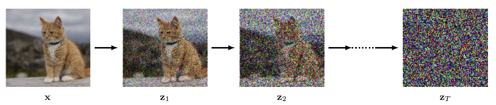

Diffusion Models
Quick Recap: Score Based Models
From our exploration of score-based generative modeling, we learned several key concepts:
Score Function: The gradient of the log probability density, \(\nabla_x \log p(x)\), which points "uphill" in the probability landscape toward high-density regions.
Score Matching: A training objective that learns the score function by minimizing the Fisher divergence between the learned and true score functions.
Score Matching Objective: The original score matching objective is:
where \(\text{tr}(\nabla_x s_\theta(x))\) is the trace of the Jacobian of the score function, which is computationally expensive to evaluate.
Denoising Score Matching (DSM): A practical variant that trains the score function to predict the direction from noisy to clean data, avoiding the need to compute the true score function.
DSM Objective: The denoising score matching objective is:
where \(s_\theta(x)\) learns to predict the score function of the noise-perturbed distribution, and \(\frac{y - x}{\sigma^2}\) is the target score function that points from noisy sample \(x\) toward clean data \(y\).
Langevin Dynamics: A continuous-time stochastic process that uses the score function to guide sampling:
Discretized Form: For practical implementation:
Mode Collapse: Standard Langevin dynamics struggles with multi-modal distributions and low-density regions.
Annealed Langevin Dynamics: Addresses this by using multiple noise scales \(\sigma_1 < \sigma_2 < \ldots < \sigma_L\), creating a sequence of increasingly noisy distributions that are easier to sample from.
Stochastic Differential Equations (SDEs): General framework for continuous-time stochastic processes:
Reverse SDE: Any SDE has a corresponding reverse process for sampling:
Time-Dependent Score Models: Neural networks that learn \(s_\theta(x, t) \approx \nabla_x \log p_t(x)\) for continuous-time processes.
Key insights:
- Score functions act as denoisers: They point from noisy to clean data
- Multiple noise scales help: Annealing from high to low noise improves sampling
- Continuous-time generalizes discrete: SDEs provide a unified framework
- Reverse processes enable generation: The reverse SDE naturally incorporates the score function for sampling
Introduction to Diffusion Models
We have seen that a powerful way to construct rich generative models is to introduce a distribution p(z) over a latent variable z, and then to transform z into the data space x using a deep neural network. It is sufficient to use a simple, fixed distribution for p(z), such as a Gaussian N(z|0; I), since the generality of the neural network transforms this into a highly flexible family of distributions over x.
The central idea is to take each training image and to corrupt it using a multi-step noise process to transform it into a sample from a Gaussian distribution.

A deep neural network is then trained to invert this process, and once trained the network can then generate new images starting with samples from a Gaussian as input. Diffusion models can be viewed as a form of hierarchical variational autoencoder in which the encoder distribution is fixed, and defined by the noise process, and only the generative distribution is learned. They are easy to train, they scale well on parallel hardware, and they avoid the challenges and instabilities of adversarial training while producing results that have quality comparable to, or better than, generative adversarial networks. However, generating new samples can be computationally expensive due to the need for multiple forward passes through the decoder network.
Forward Encoder
Suppose we take an image from the training set, which we will denote by \(x\), and blend it with Gaussian noise independently for each pixel to give a noise-corrupted image \(z_1\) defined by
where \(\epsilon_1 \sim \mathcal{N}(\epsilon_1|0; I)\) and \(\beta_1 < 1\) is the variance of the noise distribution. We can write the transformation in the form
We then repeat the process with additional independent Gaussian noise steps to give a sequence of increasingly noisy images \(z_2, \ldots, x_T\).
Each successive image is given by
where \(\epsilon_t \sim \mathcal{N}(\epsilon_t|0; I)\). Again, we can write this equation in the form
The choice of coefficients \(\sqrt{1 - \beta_1}\) and \(\sqrt{\beta_1}\) ensures that the mean of the distribution of \(x_t\) is closer to zero than the mean of \(z_{t-1}\) and that the variance of \(z_t\) is closer to the unit matrix than the variance of \(z_{t-1}\).
The sequence of conditional distributions forms a Markov chain and can be expressed as a probabilistic graphical model. The values of the variance parameters \(\beta_t \in (0, 1)\) are set by hand and are typically chosen such that the variance values increase through the chain according to a prescribed schedule such that \(\beta_1 < \beta_2 < \ldots < \beta_T\).
Diffusion Kernel
The joint distribution of the latent variables, conditioned on the observed data vector \(x\), is given by
If we now marginalize over the intermediate variables \(z_1, \ldots, z_{t-1}\), we obtain the diffusion kernel:
where we have defined
We see that each intermediate distribution has a simple closed-form Gaussian expression from which we can directly sample, which will prove useful when training as it allows efficient stochastic gradient descent using randomly chosen intermediate terms in the Markov chain without having to run the whole chain.
Also,
where again \(\epsilon_t \sim \mathcal{N}(\epsilon_t|0; I)\). Note that \(\epsilon_t\) now represents the total noise added to the original image instead of the incremental noise added at this step of the Markov chain.
After many steps the image becomes indistinguishable from Gaussian noise, and in the limit \(T \rightarrow \infty\) we have
and therefore all information about the original image is lost. The choice of coefficients \(\sqrt{1 - \bar{\alpha}_t}\) and \(\sqrt{\bar{\alpha}_t}\) ensures that once the Markov chain converges to a distribution with zero mean and unit covariance, further updates will leave this unchanged.
The marginal distribution of \(z_T\) is given by
It is common to refer to the Markov chain as the forward process, and it is analogous to the encoder in a VAE, except that here it is fixed rather than learned.
Conditional distribution
Our goal is to learn to undo the noise process, and so it is natural to consider the reverse of the conditional distribution \(q(z_t|z_{t-1})\), which we can express using Bayes' theorem in the form
We can write the marginal distribution \(q(z_{t-1})\) in the form
where \(q(z_{t-1}|x)\) is given by the conditional Gaussian. This distribution is intractable, however, because we must integrate over the unknown data density \(p_{data}(x)\).
We consider the conditional version of the reverse distribution, conditioned on the data vector \(x\), defined by \(q(z_{t-1}|z_t, x)\), which as we will see shortly turns out to be a simple Gaussian distribution. Intuitively this is reasonable since, given a noisy image, it is difficult to guess which lower-noise image gave rise to it, whereas if we also know the starting image then the problem becomes much easier. We can calculate this conditional distribution using Bayes' theorem:
Let's derive this formula step by step using Bayes' theorem and the properties of the diffusion process.
In the general case of \(n\) random variables \(X_1, X_2, \ldots, X_n\), the values of an arbitrary subset of variables can be known and one can ask for the joint probability of all other variables. For example if the values of \(X_{k+1}, X_{k+2}, \ldots, X_n\) are known, the probability for \(X_1, X_2, \ldots, X_k\) given these known values is
Applying this general definition to the case of three variables \(A\), \(B\), and \(C\), we have:
This is the fundamental definition of conditional probability for three variables. From this basic definition, we can derive the more useful Bayes' theorem form.
We can write the joint probability \(p(A, B, C)\) using the chain rule:
Substituting this into our basic definition:
We can write \(p(A, C)\) as:
Similarly, we can write \(p(B, C)\) as:
The \(p(C)\) terms cancel out:
This is Bayes' theorem for three variables.
In our case, we have:
-
\(A = z_{t-1}\) (the previous noisy image)
-
\(B = z_t\) (the current noisy image)
-
\(C = x\) (the original clean image)
Substituting these into Bayes' theorem:
Since the forward process is Markovian, \(z_t\) depends only on \(z_{t-1}\), not on \(x\) directly:
This is because once we know \(z_{t-1}\), the additional knowledge of \(x\) doesn't change the distribution of \(z_t\). We know from the diffusion kernel that:
The forward process gives us:
Putting it all together:
After algebraic manipulation, this simplifies to:
where:
Reverse Decoder
We have seen that the forward encoder model is defined by a sequence of Gaussian conditional distributions \(q(z_t|z_{t-1})\) but that inverting this directly leads to a distribution \(q(z_{t-1}|z_t)\) that is intractable, as it would require integrating over all possible values of the starting vector \(x\) whose distribution is the unknown data distribution \(p_{data}(x)\) that we wish to model. Instead, we will learn an approximation to the reverse distribution by using a distribution \(p(z_{t-1}|z_t, \theta)\) governed by a deep neural network, where \(\theta\) represents the network weights and biases. Once the network is trained, we can sample from the simple Gaussian distribution over \(z_T\) and transform it into a sample from the data distribution \(p_{data}(x)\) through a sequence of reverse sampling steps by repeated application of the trained network.